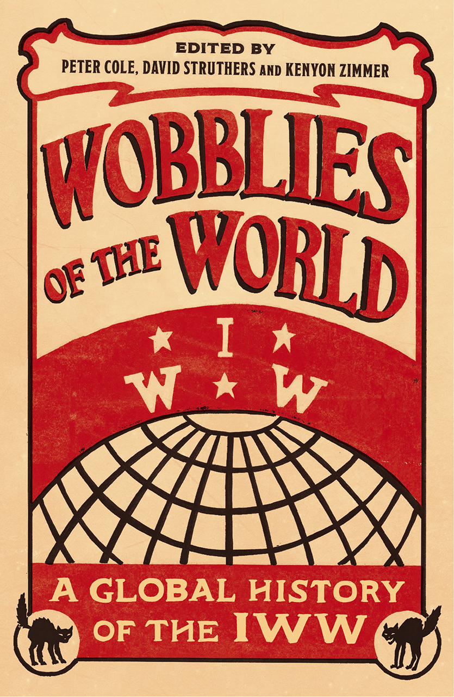

Wobblies of the World – Interview
Submitted on Mon, 06/26/2017 - 7:33pm
By staff - New Syndicalist, June 20, 2017
New Syndicalist Blog spoke to Peter Cole, David Struthers and Kenyon Zimmer about their upcoming volume, ‘Wobblies of the World: A Global History of the IWW’ – available for preorder from Pluto Press. We asked them what their history revealed about the organising approaches of the IWW in the past, what lessons can be learned for the future and how the One Big Union has adapted to a changing world.
1. What motivated you to publish a global history of the IWW at this time?
Although the world seems insane right now, our book was conceived of some years back—but shit was crazy then, too. Just as the rise of the global New Left in the 1960s sparked interest in the history of the Wobblies so have recent events. Anti-globalization, Occupy Wall Street, the Arab Spring, and other recent social movements were impressive but lacked a strong union presence. However, these push-backs against neoliberalism revealed examples of anarchist and anarcho-syndicalist tactics and ideals, a la the IWW of old. We believe that history must be “useable,” meaning people should look to Wobbly history for examples of successful struggles that are applicable to the present-day. Transformations within history as an academic discipline also made this book possible, as scholars have increasingly turned to global and transnational approaches to topics previously studies within neat national compartments, as thought people, goods, and ideas have not always traversed (and transgressed) borders.
2. Did your contributors reveal any significant variations in the IWW over place or time?
Obviously, for the IWW to grow in the soil of many lands, it had to adapt to local conditions. In Australia, the IWW worked with the mainstream unions—despite ideological differences—in opposing World War I, which resulted in surprising solidarity from those unions when the IWW suffered fierce government repression. In Ireland, one-time Wobblies led a nationalist revolution. What Wobblies did in Tampico, Mexico could be quite different than what they did in Malmö, Sweden. Perhaps equally fascinating are the commonalties. For one, the IWW did not shed its bedrock opposition to racism and xenophobia, no matter the mainstream customs of whichever society in which it organised. The IWW was the first white-majority union or organisation to attempt lining up Maori in New Zealand and Xhosa in South Africa. The IWW rejected anti-Asian sentiment in California and embraced Finns across northern Ontario. Some things never change.
3. Has the global dimension of the IWW been more or less important over time?
Yes and no. Although the IWW, as its name proudly proclaimed, extended beyond the United States from its founding convention (which included Canadian representatives, as well as a variety of immigrant workers and radicals), its global reach—in terms of both foreign branches and indirect influence—expanded dramatically in the 1910s and 1920s, reaching every inhabited continent. However, by the end of the 1920s the union and its influence were on the wane globally in the face of Communist ascendency on the Left and repression from the Right. Yet, like Joe Hill, the IWW never died, and it has been rediscovered and given new life by new generations of radicals, particularly since the 1960s, and remained a source of inspiration for an even wider array of global workers and revolutionary movements. As an actually existing union, the IWW today again counts several international branches, but nothing like in its heyday.
4. What were the most effective tactics the IWW has used for expanding its contact and influence with the broader working class – what lessons could help us do that today?
One of the themes that comes through in the book was the flexibility and adaptability of the IWW. The IWW took different forms even in the same places over time. The union had a national level organisation in the United States that supported local labor organising to various degrees, but never controlled it. Further, the union’s success in the cultural realm through songs and spirit spread the message of international solidarity, interracial organising, and revolt against capitalism. The direct lesson for today is to continue organising around the principle of anti-racism and to build solidarity networks across borders within organisations, but not confined to their structures.
5. Ganz defines strategy as ‘turning what you have into what you need to get what you want.’ Can you give us some examples of how the IWW managed to best make use of its resources in the past?
Here are two quick examples: The IWW was always extremely limited in funds. Newspapers functioned as the backbone for communication in the primary language of immigrant workers, but required financial resources to produce. IWW newspapers offered bundle orders for supporters to purchase issues in bulk to resell locally for the cover price. The difference after paying for bundle generated money for local organising. A second example is immigration. The strength of the IWW in the United States grew from its acceptance of immigrant workers. In turn, the IWW spread globally through their continued movement.
6. Does your history suggest a likely course for the union in the future? What does your investigation suggest about possible dangers and opportunities for the modern IWW, e.g. Low trade union density, stagnating wages and conditions, rise of right wing populism?
At the very least, this book has much to offer to the labor movement of the future, if not the IWW as such. The historical Wobblies faced many similar phenomena across a range of local and national contexts. And if anything, the global neoliberal capitalist order of today more closely resembles the IWW’s understanding of capitalism than did the global economy of the early twentieth century—they were interpreters of the globalization of capitalism and proponents of an “alter-globalization” long before those terms existed. Furthermore, in the face of the failure of the Communist project, social democracy’s abandonment of anti-capitalism, austerity, and the collapse of the government-mediated postwar “capital-labor accord” in the US and elsewhere, the Wobblies’ distrust of state actors and union bureaucracy, as well as their reliance on direct action, are as relevant as ever. In an era of “economic nationalism” and anti-immigrant sentiment, the IWW’s stubborn insistence on working-class solidarity across racial, ethnic, and national lines also holds the key to any future that organised labor may have. And last but not least, the IWW’s long-term syndicalist goal of working toward a post-capitalist world with both the “abolition of the wage system” and the deconstruction of the state structures still offers a “third way” out of the false choice between the “free market” and “big government” that continues to stymie labor and progressive movements across the world.